- We’re on your favourite socials!


IIT Roorkee Expert's Review and Verdict
Campus at a Glance
Established in 1847, IIT Roorkee is the oldest technical institution in Asia and the seventh IIT to be recognized as an Institute of National Importance. Founded 176 years ago as the College of Civil Engineering in British India by Lieutenant-Governor James Thomason, its purpose was to train officers and surveyors involved in constructing the Ganges Canal. After the canal's completion and Thomason's death in 1854, it was renamed the Thomason College of Civil Engineering. In 1949, it was renamed the University of Roorkee, and in 2001, it was renamed IIT Roorkee.
Located in Roorkee in the Haridwar district of Uttarakhand state, IIT Roorkee is a public technical research university accredited by NAAC and approved by AICTE and UGC. The university boasts 23 departments across the fields of Engineering, Science, Architecture, Management, and Social Sciences, offering 14 undergraduate (UG), 24 postgraduate (PG), and various other PhD courses. The main campus covers a vast area of 365 acres and the entire building is painted white which looks magnificent.
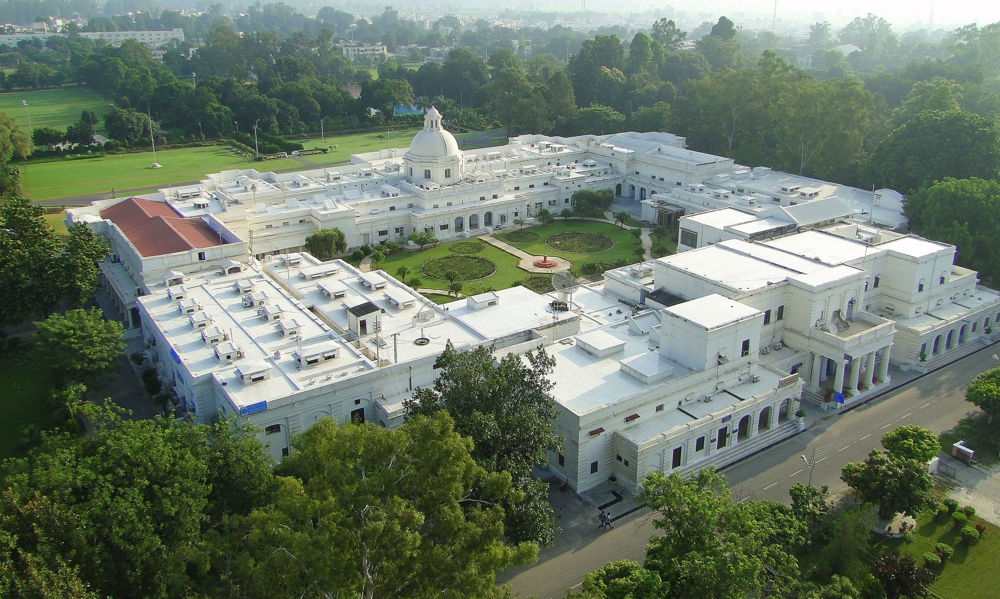
IIT Roorkee has a separate campus of 25 acres in Saharanpur and a new 10-acre campus was established in Greater Noida in 2011. The institute has everything a student can need - excellent classrooms & labs equipped with all the modern facilities and equipment, a central library with a vast collection of books, journals, magazines, etc., hostels, messes, cafeterias, auditoriums, OAT, cinema theater, entertainment block, shops, banks, cafeterias, sports areas, hang-out places, guest houses, and more.
IIT Roorkee is a dream college of many students across the country who want to get a world-class education from excellent faculty and bag an impressive placement offer upon graduation. Despite the institute's rich history contributing to its heritage and fame, there are a few pressing concerns students encounter like strict administration, unnecessary fines, timings, etc. Before you get into IIT Roorkee, have a look at our honest verdict to get an insight into everything it does or does not offer.
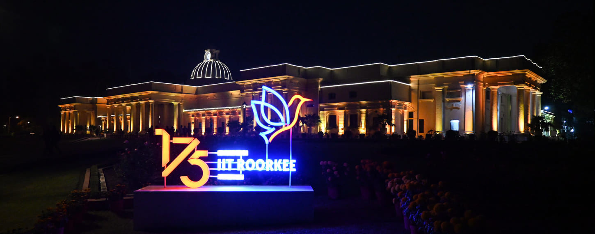
IIT Roorkee Rankings: Keeping it Consistent!
IIT Roorkee is renowned for its academic excellence both nationally and internationally. As a prestigious engineering institute, it has earned excellent rankings from top-ranking organizations. Here are the various rankings of IIT Roorkee.
IIT Roorkee International Rankings
|
Ranking Body/ Year |
Rank |
|
QS World University Ranking 2024 |
369 |
|
QS World University Rankings 2023 |
369 |
|
QS World University Rankings - Engineering & Technology 2023 |
175 |
|
QS Asia University Rankings 2023 |
114 |
IIT Roorkee QS World Ranking 2023: Parameter-Wise
|
Parameters |
Scores |
|
Overall Score |
29.9 |
|
Academic Reputation |
16 |
|
Employer Reputation |
23.9 |
|
Faculty-Student Ratio |
9.6 |
|
Citations per Faculty |
94.5 |
|
International Faculty Ratio |
1.1 |
|
International Students Ratio |
2.5 |
|
International Research Network |
35.6 |
|
Employment Outcomes |
18.4 |
IIT Roorkee NIRF Rankings
|
Category |
NIRF Ranking 2023 |
NIRF Ranking 2022 |
NIRF Ranking 2021 |
NIRF Ranking 2020 |
|
Overall |
8 |
7 |
7 |
9 |
|
Engineering |
5 |
6 |
6 |
6 |
|
Architecture |
1 |
1 |
1 |
2 |
|
Management |
18 |
19 |
14 |
12 |
|
Research |
7 |
8 |
7 |
- |
IIT Roorkee NIRF Ranking 2023: Parameter-Wise
|
Parameters |
Score out of 100 |
|
Teaching Learning and Resources (TLR) |
77.69 |
|
Research and Professional Practices (RP) |
68.00 |
|
Graduation Outcomes (GO) |
83.15 |
|
Outreach and Inclusivity (0I) |
62.80 |
|
Perception |
50.36 |
IIT Roorkee Other Rankings
|
Ranking Body/ Year |
Rank |
|
IIRF Ranking 2023 (Govt Engineering College) |
7 |
|
India Today Ranking 2023 (Top Public Colleges in India) |
5 |
|
India Today (Architecture) 2023 |
1 |
Our Take:
Seeing the national and international rankings of IIT Roorkee, it is quite evident that the institute has been consistent in providing the best quality education across different streams. It has consistently maintained its position among the top 10 institutions in the overall category of NIRF Rankings, which is an impressive feat. It is among the top five IITs in India that are dedicated to offering an at-par education and learning environment to its students.
IIT Roorkee Academia & Batch Size
IIT Roorkee was initially built as a Civil Engineering college and presently, it has 23 departments across the fields of Engineering, Science, Architecture, Management, and Social Sciences. The institute offers 14 undergraduate, 24 postgraduate, and various other PhD courses in different specializations to the students through its school.
The institute takes pride in its innovative curriculum, which includes courses on Artificial Intelligence and Machine Learning, Data Science, Indian Knowledge System, Tinkering and Mentoring, Talent Enhancement Basket, Entrepreneurship, Environmental Science and Sustainability Course, Community Outreach, Soft Skills, Theme-based Minor Specialization, Design thinking-based projects, and many other subjects.
Courses Offered by IIT Roorkee
Here are the different types of IIT Roorkee courses:Undergraduate Courses
- B.Arch - 5 Years
- B.Tech - 4 Years (Civil Engineering, Biosciences & Bioengineering, Chemical Engineering, Polymer Science & Engineering, Electrical Engineering, Data Science and Artificial Intelligence, Electronics & Communication Engineering, Computer Science & Engineering, Mechanical Engineering, Metallurgical & Materials Engineering, Engineering Physics)
Integrated Courses
- Integrated Master of Technology (Geophysical Technology, Geological Technology)
- 5-year BS-MS programs with an exit option after four years with a BS Degree (Mathematics & Computing, Physics, Chemical Sciences, Economics)
- Integrated Master of Science (Applied Mathematics, Chemistry, Physics)
Postgraduate Courses
- M.Arch (Master of Architecture ) - 2 Years
- M.E./ M.Tech (Master of Technology) - 2 Years (40 Specializations)
- M.Des (Industrial Design) - 2 Years
- MIM (Masters in Innovation Management) - 2 Years
- MURP (Master of Urban and Rural Planning) - 2 Years
- MBA (Master of Business Administration) - 2 Years
- PG Diploma in Hydrology, Irrigation Water Management, Water Resources Development for Sponsered Students
Ph.D. Courses
The institute offers Ph.D. programs in all departments and accepts new students every semester. A student's thesis is evaluated by three external examiners and defended in front of an Oral Defense Committee. The Senate awards the Ph.D. degree based on their recommendations.
IIT Roorkee Fee Structure
Getting an education at IIT Roorkee is quite affordable compared to other premier institutes in India. Check the fee structure for different courses offered by IIT Roorkee.
|
Course |
Total Fees |
|
B.Tech |
INR 8.94 Lakhs |
|
B.Arch |
INR 8.94 Lakhs |
|
BS-MS |
INR 8.94 Lakhs |
|
Integrated M.Tech |
INR 8.94 Lakhs |
|
M.Sc. |
INR 64,200 |
|
M.Tech Geological Technology Integrated |
INR 11.15 Lakhs |
|
MBA |
INR 8.52 Lakhs |
Batch-Size at IIT Roorkee
|
Course |
Seat Capacity |
|
B.Tech in Civil Engineering |
163 |
|
B.Tech in Computer Science and Engineering |
92 |
|
B.Tech in Electrical Engineering |
139 |
|
B.Tech in Mechanical Engineering |
127 |
|
B.Tech in Engineering Physics |
34 |
|
B.Tech in Metallurgical and Materials Engineering |
93 |
|
B.Tech in Chemical Engineering |
100 |
|
B.Tech in Biotechnology |
37 |
|
B.Tech in Electronics and Communication Engineering |
91 |
|
B.Tech in Polymer Science and Engineering |
34 |
|
B.Tech in Production and Industrial Engineering |
49 |
|
MBA |
95 |
|
B.Arch |
37 |
|
Integrated M.Tech (Geological Technology) |
38 |
|
Integrated M.Tech (Geophysical Technology) |
38 |
|
BS-MS Dual Degree (Physics) |
25 |
|
BS-MS Dual Degree (Chemical Sciences) |
37 |
|
BS-MS Dual Degree (Mathematics) |
35 |
|
BS-MS Dual Degree (Economics) |
33 |
IIT Roorkee Admission Process
For admission to IIT Roorkee's flagship B.Tech programme, applicants must obtain a qualifying rank in JEE Advanced after taking the JEE main exam. Once JEE Advanced results are announced, those who meet the criteria must register online for JoSAA counseling for seat allocation. IIT Roorkee offers several postgraduate programs, including M.Tech, M.Sc, MArch, MURP, MBA, and Integrated courses.
Admission to the M.Tech /MArch/ MURP programmes requires taking the GATE exam followed by an interview. For M.Sc. admission, applicants can submit their IIT JAM scores and participate in the PI round. Those hoping to pursue an MBA must pass the CAT exam. IIT Roorkee offers both full-time and part-time Ph.D. programs, with candidates required to submit valid scores from exams such as GATE, JRF, UGC NET, or GPAT. Furthermore, for PG courses at IIT Roorkee, those who have graduated from IIT with a CGPA of at least 8 are exempt from the entrance exam.
IIT Roorkee Alumni
IIT Roorkee boasts a strong alumni network, comprising distinguished graduates who have contributed significantly to various fields, including industry, academia, and public service in India as well as abroad. India's prestigious Padma award has been won by 10 alumni from this institute, while 25 have received the Shanti Swarup Bhatnagar Prize for Science and Technology. The institute has also produced 7 chairmen of the Indian Railway Board and over a hundred secretary-level officers in the Government of India. Some of the most prominent alumni include-
- Amit Singhal, former senior vice president at Google
- Digvijai Singh, chemical engineer, former vice-chancellor of the University of Roorkee
- Shyam Sundar Rai, a Seismologist
- Papias Malimba Musafiri, former Cabinet Minister of Education of Rwanda
- Sudhir K. Jain, Vice Chancellor, Banaras Hindu University
- Nilmani Mitra, a 19th-century architect, and designer of several palaces in Kolkata
- Mangu Singh, managing director of Delhi Metro Rail Corporation Limited
Our Take:
It is undeniable that IIT Roorkee has an outstanding academic standing both in India and abroad. The institute offers a variety of courses, all taught by highly qualified and experienced educators with extensive knowledge and expertise in their respective fields. Moreover, the institute has a thriving research environment, with faculty members conducting innovative research in various subject areas.
Despite this, a few students have expressed dissatisfaction with the college's administrative policies. 5 CGPA criteria is one of the most infamous things that put a dent in the image of this college. In 2015, students who scored lower than 5 CGPA in the second semester were expelled from the institute as per a decision of the Senate consisting of over 100 professors.
IIT Roorkee Infrastructure
IIT Roorkee is situated amidst the beautiful Himalayan foothills, offering a picturesque and tranquil setting for students' holistic growth and learning. Upon visiting the campus, the elegance of the main building in the Renaissance style of architecture, spacious lawns, and sports grounds leave a lasting impression. The awe-inspiring James Thomson Building, which serves as the main administrative block, stands out with its magnificent white structure.
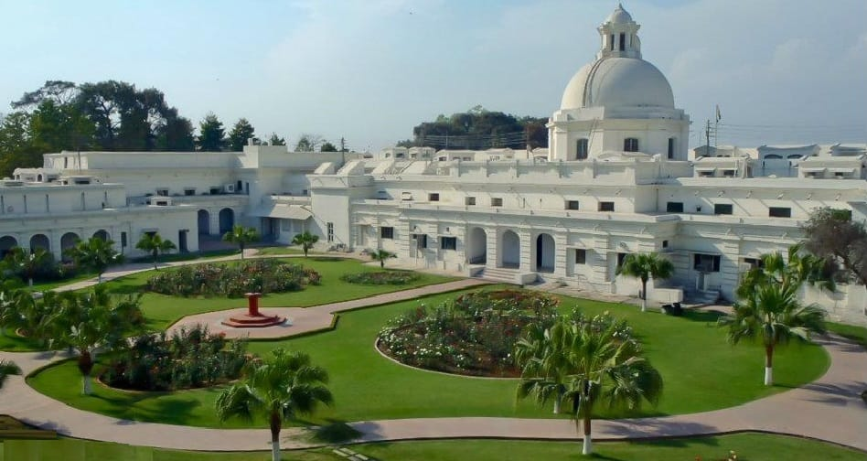
Three Campuses
IIT Roorkee boasts a vast campus spanning over 365 acres, making it one of the largest IITs. Additionally, IIT Roorkee has a well-planned campus in Saharanpur, spanning 25 acres and located approximately 49 km away from the Roorkee campus. This campus is known as the Department of Paper Technology and offers a two-year M.Tech. degree program in Paper Technology, catering to the needs of the paper and packaging industries while simultaneously imparting knowledge of the allied chemical and process industries.
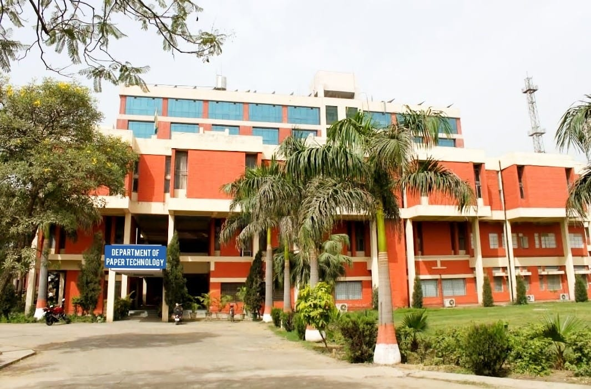
IIT Roorkee also has a campus located in the NCR region called the Greater Noida Center (GNEC). The centre offers various programs, including Post Graduate Courses (part-time M.Tech and MBA), Sponsored short-term courses/QIP courses, National and international Workshops/Conferences, Entrepreneurship development, incubation and marketing surveys, Workshops for Industry-Academia Interaction, and liaisoning with industry and government departments in and around Delhi for promoting/supporting sponsored research and industrial consultancy.
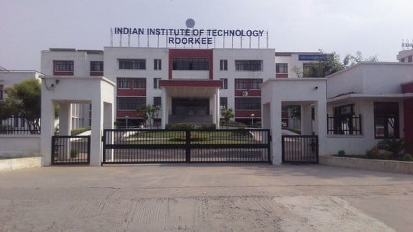
Classrooms
IIT Roorkee’s classrooms include modern infrastructure and a stimulating academic environment that fosters the development of students across various streams. Each classroom is centrally air-conditioned and equipped with cutting-edge amenities, including audio and video conferencing, a digital podium, a laser projector, a motorized projector screen, and a digital writing board. The new state-of-the-art lecture hall complex is designed to deliver the best utilities and facilities. Plus, it's sustainably built with a focus on maximizing natural daylight and ventilation to complement the building's orientation.
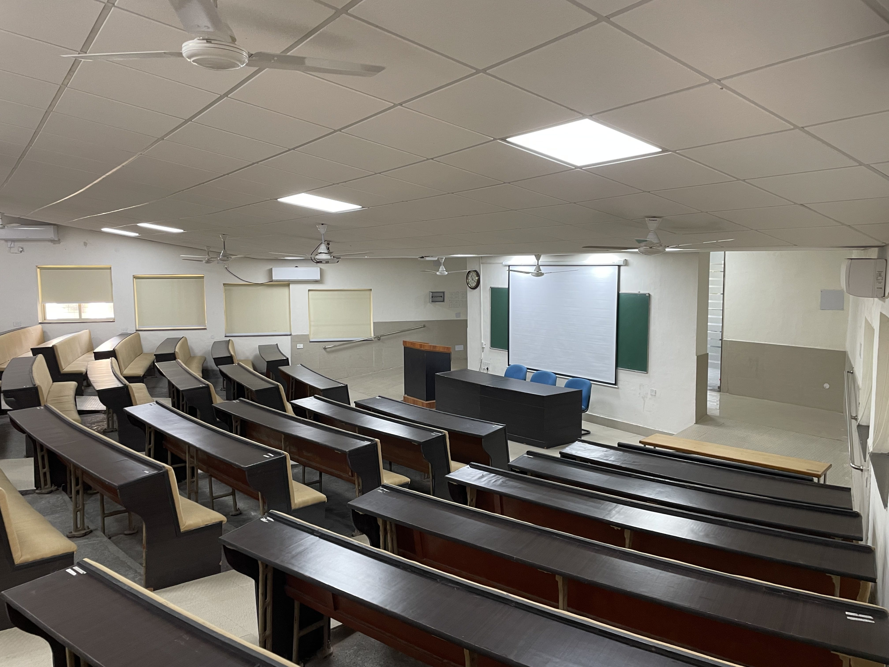
Library
The Mahatma Gandhi Central Library at IIT Roorkee has an impressive collection of over 320,000 documents, including CDs, online databases, audio-visual materials, and more. With access to over 8,000 electronic journals, the library is housed in a modern building spanning 80,000 square feet and four floors. The building is centrally air-conditioned and equipped with the latest ICT facilities, accommodating up to 500 users with ease and comfort. Natural light floods the space, making it an ideal spot for reading. The library also uses RFID technology to offer a seamless experience without the need for human assistance. Wired connectivity is available for over 200 computers, while Wi-Fi access is available throughout the building.
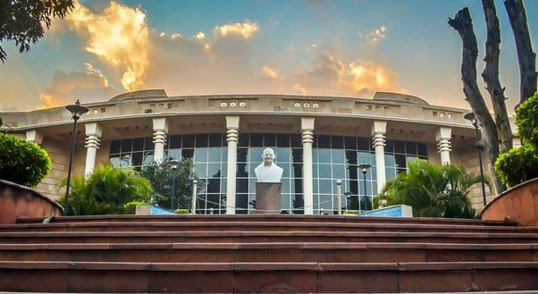
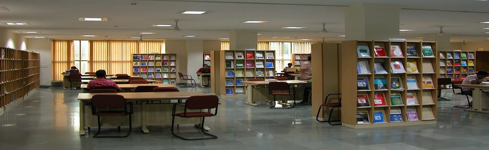
Labs
IIT Roorkee has various labs for practical training and research in each department with the latest equipment and modern amenities. For instance, the mechanical and Industrial engineering department has labs like the Advanced Manufacturing Process Laboratory, Aerodynamics Lab & Solar Energy Laboratory, Computer Aided Engineering Laboratory, Dynamics of Machines Laboratory, etc.
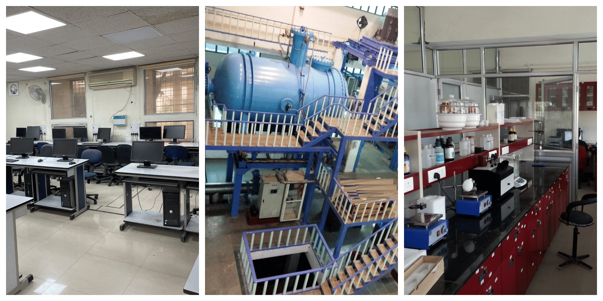
Convocation Hall & Auditoriums
At IIT Roorkee, there is a convocation hall that can accommodate up to 1827 students. This hall features centralized HVAC technology that uses chilled water cooling. Furthermore, it has LED lighting with a dimming function that is controlled through BMS. Additionally, the doors are fire-resistant for safety purposes. The institution boasts multiple auditoriums located in various departments that are outfitted with advanced audio-visual equipment. These auditoriums can facilitate video conferencing, sound systems, and audio-visual materials. They are well-suited for a range of events, including international conferences, symposiums, meetings, seminars, concerts, presentations, and performances.
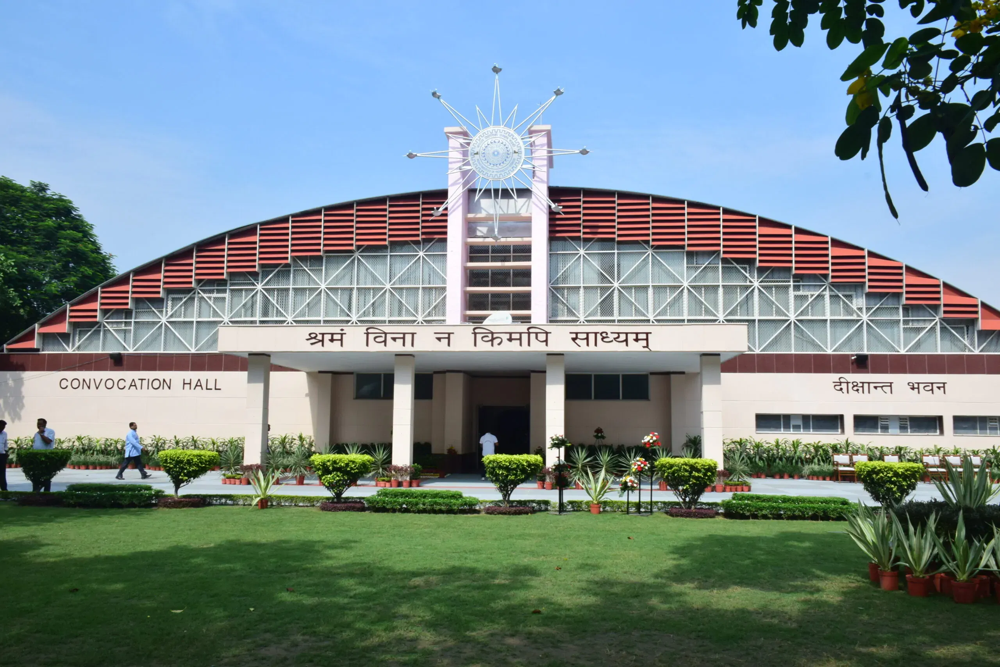
Hostels
IIT Roorkee has 10 boys' hostels, 3 girls' hostels, 6 hostels for married candidates, and one co-ed hostel. These hostels, known as ‘Bhawans,’ have basic amenities like a cyber cafe, gym, Wi-Fi, water purifiers, common room, recreation room, mess, canteens, TV, laundry services, security and surveillance system, etc. The internet speed is quite good in the hostel, as some students have suggested that it is the best among other IITs. However, the female students in the hostels are not allowed to go out from 11 PM to 6 AM which has been objected to by many.
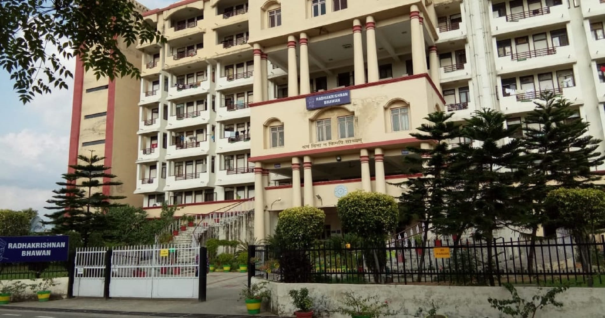
Hostel Fees (Per Semester)
Provided below is the minimum charge for a bachelor’s hostel. For married accommodation, charges will be as per actual.
|
Hostel Charges |
Autumn |
Spring |
|
(a) Accommodation |
INR 5000 |
INR 5000 |
|
(b) Electricity* |
INR 2500 |
INR 2500 |
|
Total |
INR 7500 |
INR 7500 |
Mess
IIT Roorkee has multiple messes that offer good quality food to students. Rajendra Bhawan mess and Sarojini Bhawan mess offer the best quality food and are well equipped with a TV and music system. Also, food is provided to students in their rooms who are unable to go mess due to health issues. Visitors are allowed to eat food in a mess.
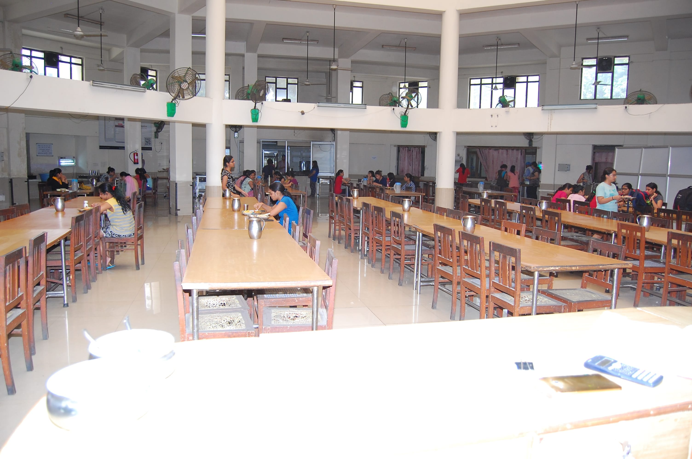
Mess Fees (Per Semester)
|
Mess Charges |
Autumn |
Spring |
|
(a) Mess Advance towards Food Charges** |
INR 20250 |
INR 20250 |
|
(b) One-Time Mess Admission Fee (nonrefundable) |
INR 4000 |
0 |
|
(c) Mess Security (Refundable) |
INR 2000 |
0 |
|
Total (a+b+c) |
INR 26250 |
INR 20250 |
Canteens & Hang-outs
There are several eateries available on the IIT Roorkee campus, conveniently located at various spots. Each hostel has its own canteen and fresh fruit stalls, providing students with ample seating space to eat and socialize with their peers. The Multi Activity Centre boasts a Cafe Coffee Day, an Amul parlor, and Saatviko Idea Cafe. To satisfy late-night cravings, students can visit the Shri Balaji Cautley Bhawan Cafe which operates from 2 A.M to 2 P.M, after all other canteens have closed. These canteens offer a wide range of food items, including Maggie, poha, coffee, milk, cold drinks, packaged food, and beverages.
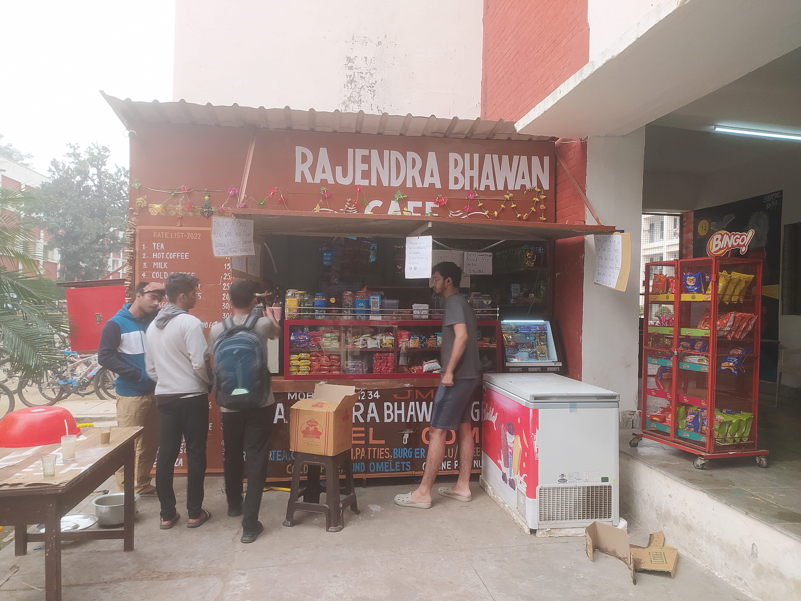
Sports Facilities
At IIT Roorkee, there is a wide range of sports facilities available, including Badminton, Tennis, Squash, and Basketball Courts. Additionally, there are full-sized, competitive-grade pitches and grounds for sports such as Athletics, Football, Hockey, and Cricket. Indoor games like Table Tennis are also available. For those looking to swim, there is an Olympic-sized swimming pool. A professional gymnasium is also available for weight lifting and general well-being.
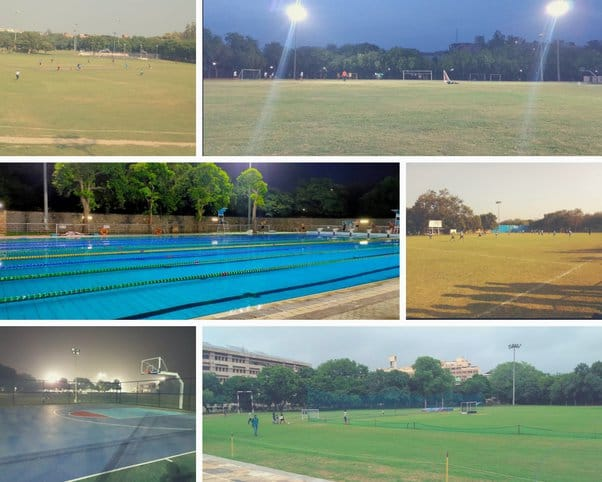
Banks
On the IIT Roorkee campus, there are two banks available to students: Punjab National Bank (P.N.B.) and State Bank of India (S.B.I.). Both banks offer Centralised Banking Services, Internet Banking, and ATM facilities. It is mandatory for every student to open an account with either bank upon enrollment. The banks are conveniently located, with P.N.B. situated near the post office and S.B.I. located in the main building on campus. The Punjab National Bank's A.T.M. is located right next to the bank, while S.B.I. has two A.T.M.s on-campus, one near their bank branch and another in Cautley Bhawan.
Post Office
There is a post office located on the campus near the U.G. club. It provides services to students, faculty, and non-residents of the campus. The post office is well-equipped and open on weekdays from 9 A.M. to 5 P.M. and on Saturdays from 9 A.M. to 2 P.M.
Aarohi Child Care Centre and Playgroup
Aarohi Child Care Centre and Playgroup is a facility provided by IIT Roorkee for the welfare of staff with children. It caters to the children of employees, students, and research scholars. It offers facilities like a library, sleeping rooms, outdoor and indoor play areas, dining room, activity rooms, etc.
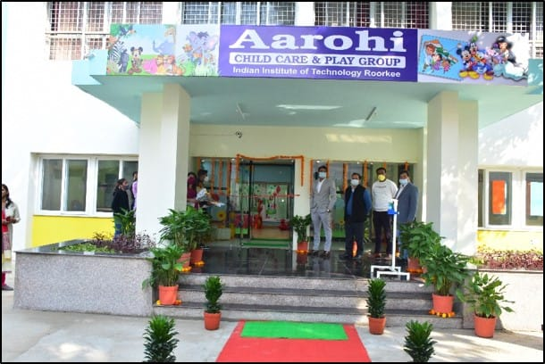
Other Facilities
IIT Roorkee provides comfortable accommodations for visiting dignitaries with four fully furnished guest houses and one visitors' hostel located on campus. Excellent healthcare facilities are provided within the campus hospitals. Additionally, the campus has a mosque, a temple, and a church. Indian Railways has set up a computerized railway reservation counter on campus for the convenience of students. E-rickshaws are also available for use by students and faculty.
Our Take:
The infrastructure of IIT Roorkee is indeed world-class as students really enjoy their time here. However, as nothing is perfect, the institute too has a few flaws. Some students have complained about the quality of food at the mess and sometime back, many suffered from food poisoning after eating hostel food. Female students are not allowed to go out of the hostel after 11 PM and before 6 AM, which has upset many as no other IIT has this rule. During fests and events, this causes a lot of trouble. A few students have also complained about the labs which are not properly maintained.
IIT Roorkee Internships & Placements
IIT Roorkee provides various types of placement and internship opportunities to students studying in their final year.
IIT Roorkee Internships
SPARK is an internship program at IIT Roorkee offered to undergraduate and postgraduate students for industry exposure. The institute organizes 6-8 weeks of institute-funded SPARK fellowships for internships with a weekly stipend of INR 2500/week and project-funded internships.
IIT Roorkee Placements
Based on IIT Roorkee NIRF data 2023, a total of 764 undergraduate students were successfully placed through the campus drive. The median salary package offered to these students was INR 17,00,000. Meanwhile, the median salary package offered to postgraduate integrated 5-year students was INR 22,54,000. Numerous well-known organizations such as IBM, Outlook, Infosys, Cognizant, Deloitte, Vedanta, and NatWest took part in the placement drive at the Indian Institute of Technology in Roorkee.
IIT Roorkee Placement Report 2023
|
Particulars |
Placements Statistics 2023 |
Placements Statistics 2022 |
|
No. of Recruiters |
63 |
265 |
|
No. of offers |
500 |
1200+ |
|
Highest CTC |
INR 1.3 CPA |
INR 2.15 CPA |
|
Highest International CTC |
INR 1.06 CPA |
INR 2.15 CPA |
IIT Roorkee Course-wise Placement Report (NIRF 2023)
|
Particulars |
Statistics for 4-Year UG Program |
Statistics for 5-Year UG Program |
Statistics for 2-Year PG Program |
Statistics for 5-Year PG Integrated Program |
|
No. of students in batch |
879 |
30 |
884 |
130 |
|
No. of students eligible |
861 |
30 |
773 |
126 |
|
No. of students graduating |
824 |
30 |
620 |
123 |
|
No. of students placed |
764 |
27 |
311 |
95 |
|
Median salary package offered |
INR 17,00,000 |
INR 10,00,000 |
INR 12,00,000 |
INR 22,54,000 |
|
No. of students selected for higher education |
60 |
3 |
309 |
28 |
Our Take:
The institute has achieved a 100% placement rate during the MBA placement drive of 2023 which is quite impressive. The engineering placement rate is also excellent in the institute as students are selected by various renowned organizations at lucrative salary packages. The institute even provided pre-placement training to students.
A few students have complained that only students from the CS branch are given the best placement opportunities, the rest are not treated well. Since the placement drives are conducted at the main campus, students from the Saharanpur campus face issues travelling to and fro from their campus to the main campus. Also, the Noida campus was supposed to be the hub for placements; however, nothing has been done since its inception.
IIT Roorkee Diversity Representation
IIT Roorkee, being a premier institute in India, attracts students from all across the country and even abroad. You can find students belonging to different states, cultures, and ethnicities here. Let us have a look at the gender ratio across various courses:
Gender-wise All Admitted Students in AY 2023-24
|
Particulars |
Male |
Female |
|
All students admitted in AY 2023-24 |
2099 |
591 |
|
PhD students admitted in AY 2023-24 |
229 |
123 |
|
PG students admitted in AY 2023-24 |
810 |
200 |
|
UG students admitted in AY 2023-24 |
1060 |
268 |
Gender-wise International Admitted Students in AY 2023-24
|
Particulars |
Male |
Female |
|
All international students admitted in AY 2023-24 |
204 |
44 |
|
Ph.D. international students admitted in AY 2023-24 |
43 |
22 |
|
PG international students admitted in AY 2023-24 |
156 |
20 |
|
UG international students admitted in AY 2023-24 |
3 |
2 |

Our Take:
The gender ratio at IIT Roorkee is around 78:22% which is not very impressive. The institute needs to take some strong measures to bridge this gender gap to create a balance. Since its establishment in 1847, this institute has had a strong international presence. IIT Roorkee has the highest number of international students among all IITs. To date, students from 55 different countries have been educated at IIT Roorkee. The institute is proud to continue its tradition of being a major educational hub for Asia and Africa even in recent times. The institute is committed to international cooperation and actively partners with countries to develop initiatives in engineering, applied sciences, social sciences, and management education.
IIT Roorkee Management/ Administration
As IIT Roorkee is a huge institute, different areas of administrative importance are handled by respective deans. These areas include Academic Affairs, Finance and Planning, Administration, DOSW, Faculty Affairs, Infrastructure, International Relations, SRIC, Resources and Alumni Affairs, Saharanpur Campus, etc. The college management is dedicated to offering the best education and facilities to keep up with its legacy and historical importance. Students here are encouraged to be involved in sports, research, robotics, and more.
Our Take: Despite the excellent management, a few students have complained about the college's administrative policies. The Spring Semester commences on December 30 or 31, requiring students to return a day before New Year's Eve or pay a fine of INR 500. Despite this, classes may not begin for up to four days. At the start of every semester, students must register for academic courses and institute electives, among other things. Those who fail to do so on time are subject to a fine of INR 1000. The restriction on female students to stay inside the hostel between 11 PM and 6 AM is also not taken positively by many students.
IIT Roorkee Location
IIT Roorkee is situated in Roorkee town, located in the Haridwar district of Uttrakhand state. The campus is surrounded by the stunning Himalayan foothills, providing a serene and scenic environment for students to learn and grow holistically. The campus is spread across a flat terrain under the Sivalik hills of the Himalayas. The city is built along the banks of the Ganges canal, which flows from north to south, dividing the city in two.
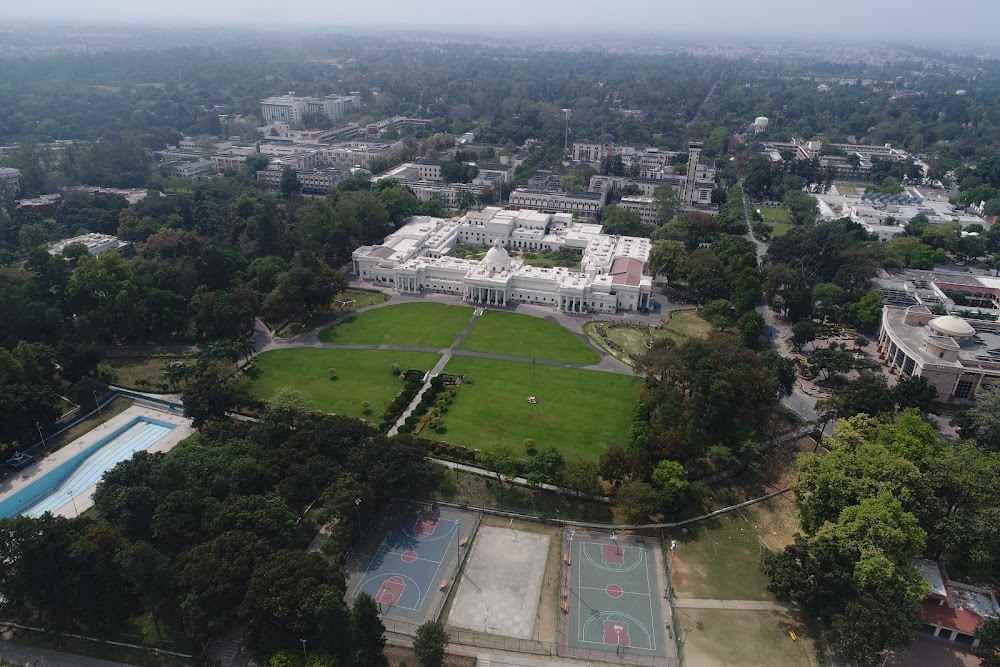
The most convenient option to reach Roorkee is viad Delhi which is around 180 km. It takes about 6 hours to travel from Delhi to Roorkee by car or bus. The distance by train from Delhi to Roorkee is 212 km. There are 18 direct trains from New Delhi to Roorkee. The most preferred airport to approach Roorkee is Delhi Airport and the distance is 200 km on the road (5.5 hours journey by taxi) from Roorkee. The nearest airport is Jolly Grant Airport in Dehradun, about 70 km away from the town.
For students seeking a tranquil and green environment free of pollution, IIT Roorkee is the perfect choice. While there may not be a large mall for shopping and hangouts, most brands are available nearby. Additionally, there are many options for weekend getaways such as Mussoorie, Dhanolti, Rishikesh, Shimla, Delhi, Nainital, Jim Corbet, Devaprayag, and Lansdowne, which can be enjoyed on a bike trip. Since most of the items of daily need are available inside the campus, students don’t need to worry about going out every now and then.
IIT Roorkee Expectation vs Reality CLD Verdict!
While IIT Roorkee is too famous for its history, it’s not the only reason students dream of studying here. It offers excellent infrastructure and world-class education provided by highly qualified faculty. Facilities like hostels, labs, libraries, canteens, banks, sports, hospitals, etc. are provided to the best of management’s capabilities to give students the best experience. By examining the roster of graduates from this institution, it's clear that one can achieve great success in their career by diligently studying here.
In addition to receiving a quality education, students have the opportunity to participate in various cultural events, such as Thomso, which is famous as the "Annual Youth Festival of Uttarakhand." Numerous well-known bands, including the Beatles, have performed here. The institution offers a plethora of groups and clubs, including technical, coding, and cultural groups like music, dance, photography, literary, poetry, drama, lighting, stand-up, culinary, and more. Whatever your interests may be, there is something for everyone!
Although this institute has its merits, there are several areas that require improvement. The management team must be more receptive to the feedback and suggestions provided by their students and faculty. Additionally, students seem disconnected from the faculty due to the large class sizes and disrespectful attitudes toward their teachers. If you are considering IIT Roorkee, then we suggest considering all these points we talked about here so that you can make an informed decision about your career!
Final Review Checkbox!
|
Yay! |
Nay! |
|
Quality education |
Strict management |
|
Highly qualified faculty |
Hostel timing restriction for female students |
|
Good hostels |
Located in a small town |
|
Beautiful campus |
Poor male-to-female ratio |
|
Excellent location |
Large batch size for some courses |
|
Pleasant weather |
No place to stay inside campus for parents |
|
Less distraction around the campus |
|
|
Well-maintained classrooms & labs |
|
|
Excellent library |
|
|
Annual festivals like Thomso |
|
|
Emphasis on all kinds of sports |
|
|
Canteens and hangout places all over the campus |
|
|
Banks, post office, hospitals, shops, etc. within the campus |
|
|
Good student diversity (national + international) |
What students says about IIT Roorkee
- Many companies visit campus for placements
- Faculty is experienced and helpful
- Campus life is good
- Admission process is simple
- Course curriculum is outdated
- Need to update curriculum according to current industry standards
Note: Insights gathered through various sources across internet like student reviews, ratings, student testimonials etc
IIT Roorkee Reviews and Rating
Why to choose IIT Roorkee?

4.3
(12 Verified Reviews)
Share your college experience
Earn unlimited cash rewards  Earn up to ₹10 for every approved college review. Refer your friends to write reviews and earn ₹10 for each of their approved reviews too.
Earn up to ₹10 for every approved college review. Refer your friends to write reviews and earn ₹10 for each of their approved reviews too.

Student Feedback and Rating on IIT Roorkee
Enrollment : 2017 | Nov 12, 2025
Overall Rating of the University
Overall My overall experience at this college has been truly rewarding. The campus offers a positive learning environment with supportive faculty who are always ready to guide students beyond academics
Placement The placement opportunities at our college are quite impressive and improving every year. The dedicated placement cell works tirelessly to connect students with top companies and provides continuous support through training sessions, mock interviews
Infrastructure The college offers impressive infrastructure that supports both academic and extracurricular growth. Classrooms are spacious, well-ventilated, and equipped with smart boards for interactive learning.
Faculty The faculty at our college truly stands out for their dedication and expertise. Most professors are highly qualified and bring a great mix of academic knowledge and real-world experience into the classroom.
Hostel The hostel provides a comfortable and secure environment for students. Rooms are well-maintained with proper ventilation and regular cleaning. Each room has essential furniture like a bed, study table
Enrollment : 2025 | Oct 07, 2025
Overall Rating of the University
Overall With its focus on academic quality, technical exposure, and overall student development, this institute has made a name for itself. There are several different undergraduate and graduate courses available at the college.
Placement Placements have shown consistent improvement, as reputable companies such as TCS, Cognizant, Accenture, Capgemini, and Infosys actively recruit students, particularly from the CSE, IT, and ECE disciplines.
Infrastructure Wi-Fi is available on campus, and the well-maintained seminar rooms, large lecture halls, and smart classrooms all contribute to an engaging learning environment. One of the main attractions is the central library, which has a large collection of books and journals.
Faculty As a result of the supportive, knowledgeable, and approachable faculty, the learning environment is conducive for students. There is also a strong emphasis on research and project-based learning at the institute.
Hostel There are separate dormitories with sanitary dining areas and adequate security for males and girls. With great access to transportation and environmentally favorable surroundings
Enrollment : 2025 | Sep 15, 2025
A comprehensive review
Overall This Institute has established itself as a reputed institute, known for its emphasis on academic quality, technical exposure, and overall student development. The college offers a wide range of undergraduate and postgraduate courses
Placement Placements have been consistently improving, with reputed companies like TCS, Cognizant, Accenture, Capgemini, and Infosys recruiting students, especially from CSE, IT, and ECE streams.
Infrastructure The campus is Wi-Fi enabled and equipped with smart classrooms, spacious lecture halls, and well-maintained seminar rooms that create an interactive learning environment.The central library is a major highlight, housing a wide collection of books, journals
Faculty Faculty members are generally supportive, knowledgeable, and approachable, making the learning environment student-friendly. The institute also encourages research and project-based learning
Hostel Separate hostels for boys and girls with proper security and hygienic dining arrangements are available. With excellent transport connectivity and eco-friendly surroundings
Enrollment : 2025 | Sep 10, 2025
Overall Rating of the University
Overall The university provides a balanced environment for both academic and personal growth. The faculty members are well-qualified, approachable, and supportive, ensuring that students gain a strong understanding of their subjects.
Placement The university regularly invites reputed companies from diverse sectors such as IT, core engineering, management, healthcare, and law, ensuring that students from all streams get fair placement opportunities
Infrastructure The infrastructure of the university is one of its strongest aspects, providing students with an environment that supports both academic learning and personal growth. The campus is well planned
Faculty The faculty at this University plays a vital role in shaping the overall academic experience of students. Most of the professors and lecturers are highly qualified, with strong academic backgrounds
Hostel The hostel facilities at this University are designed to provide students with a comfortable and safe living environment, making it easier for them to focus on academics and extracurricular activities
Enrollment : 2025 | Sep 04, 2025
A comprehensive review
Overall Has quickly emerged as a promising institution in higher education known for its modern infrastructure and industry aligned courses the university offers a diverse range of programmes
Placement In terms of placement the university maintains decent records especially in IT management and core engineering domains with top recruiters like TCS Cognizant and Wipro visiting the campus
Infrastructure Spread over a sprawling green campus the university boasts state of the art infrastructure including smart classrooms well equipped laboratories and an expansive library with digital access
Faculty Faculty members are generally qualified and supportive with many having industry and research experience hands on learning and skill development often organising workshops
Hostel The hostel is designed to provide a safe comfortable and conducive environment for academic and personal growth there are separate hostels for boys and girls
Enrollment : 2018 | Aug 16, 2024
IIT Roorkee's outline
Overall The college organises many events, like a cultural fest named Thomso, a sports fest named Sangram and a tech fest named Cognisance. They provides you amazing exposure and atmosphere.
Placement The percentage of students placed is 75%. The highest package is 26 LPA, and the lowest package is 2.7 LPA for freshers. Companies such as Information Teach, IBM, Infosys, and more recruit from our course
Infrastructure The facilities and infrastructure in the department are well-designed. Wi-Fi facilities connect in labs and classrooms. The library has a wide range of books with latest collection.
Faculty The teachers are helpful in teaching all concepts, with lot of experience. They teach well, and the course is relevant, making students industry-ready and providing hands-on experience.
Hostel All the hostels have basic amenities like cyber cafe, gym, Wi-Fi, water purifiers, common room, recreation room, mess, TV, laundry services, security and surveillance system etc.
Enrollment : 2019 | Apr 13, 2024
Placements of the university
Placement Almost 70 % of the students are placed. The highest package offered is 10 LPA and the lowest package offered is 5 LPA and the average package offered is 7 LPA CGL, VIPRO, and TCS are the companies which come for recruiting.
Infrastructure College infrastructure is quite good it has all the facilities the library classroom laboratory field and sports ground , we had all the accessibility of the facilities it helped us to enhance our skills
Faculty All the faculty members are well-educated, having CA and CS degrees, and all have Ph.D. degrees. Though the teaching style of many faculty members is not up to that level, still, there are many good faculty members with a good teaching style
Hostel The hostel in this college is very good. The rooms are cleaned every day, the food was very good but not like home but yes every day special thing was made. jain food also available for Jain students.
Enrollment : 2021 | Mar 25, 2024
A Brief About IIT Roorkee
Overall It is one of the top IT colleges in India.It is a place where you can compete with a lot of competitors like you.It provide a great academic environment.
Placement No need to worry about placements because every small to international company visits this institute for placements.and the average package is 17 - 20 LPA.
Infrastructure The overall college contains a main acedamic buliding along with a large play ground, a canteen and hostels. The buildings are so nicely designed and it is very attractive.
Faculty The faculity is very supportive, Interactive and are highly qualified.They are very helpful and always stands with students to help them.They also support us mentally sometimes.
Hostel Hostels are much facilating. Rooms are given with a fan, A shelf, an almirah, a bed and a study table and chair. The cleanliness is also not bad. The washrooms are available in each individual room.
Enrollment : 2024 | Feb 20, 2024
This college secured 6th nirf rank .
Overall The oldest college in the India secured 6th position in nirf ranking . Addmission in mtech through gate score and admission in btech through jee advance exam . Well developed infrastructure,good placement.
Placement Here 100% placement are available for students , all the biggest company in the world visit this college and giving the offer to students, avg placement of this college is 18 lakh
Infrastructure Main building of this college amazing,this building is oldest building in this college and other buildings are well developed infrastructure like library department sports facilities and all.
Faculty Fully experienced faculty in this college,they have lot of research on their subjects and find the easy way to teach us. They made easy for us , they done their PhD from abroad in top universities.
Hostel There are different different hostels for girls and boys . Hostels are available in one and 2 sitter rooms. infrastructure of hostel is very good with attached RO, canteen facilities, indoor sports and etc.
Enrollment : 2015 | Feb 18, 2024
Beauty of iit for inspiring and innovation
Overall As many aspirant know how's iit rookee. It comes under top iits in india.Iit roorkee is a dream of every aspirant who is preparing for jee.I completed btech from iit rookee at 2019,and that 4 yrs was best years of my life.The overall experience at IIT Roorkee is truly incredible. The institute offers a vibrant and diverse community where students can explore their interests, learn from brilliant minds, and create lifelong memories. The rigorous academic curriculum challenges students to push their boundaries and excel in their chosen fields. The faculty members are highly knowledgeable and supportive, providing guidance and mentorship to help students reach their full potential. Beyond academics, there are numerous clubs, societies, and events that cater to a wide range of interests, allowing students to pursue their passions and develop their skills outside of the classroom. The beautiful campus, surrounded by the scenic Himalayan foothills, adds to the charm of the experience. The hostel life fosters friendships and a sense of camaraderie among students. Overall, IIT Roorkee offers an enriching and holistic experience, preparing students for successful careers and lifelong learning. Iit is not a building its an emotion for several peoples.Hope you also experience such emotions and funny Ness.
Placement iit roorkee is one of the top engineering institutes in India. It has a great placement record with companies from various sectors visiting the campus. The placement season usually starts in the seventh semester, and students have the opportunity to secure internships and full-time job offers. The average salary package offered to students is quite impressive, and many renowned companies like Google, Microsoft, and Amazon recruit from IIT Roorkee. The institute also has a strong alumni network, which helps in creating more placement opportunities for the students. Overall, IIT Roorkee provides a solid platform for students to kickstart their careers.
Infrastructure The infrastructure at IIT Roorkee is top-notch and provides a conducive environment for learning and growth. The campus is spread over a vast area and houses well-equipped classrooms, laboratories, and research facilities. The institute has modern and well-maintained hostels that provide a comfortable stay for the students. There are also sports facilities, including a gymnasium, swimming pool, and various sports fields, encouraging a healthy and active lifestyle. The library at IIT Roorkee is extensive, with a vast collection of books, journals, and digital resources to support academic pursuits. The campus also has a hospital, ensuring the well-being of the students. Moreover, IIT Roorkee is located in a picturesque setting, surrounded by the beautiful Himalayan foothills, adding to the overall charm of the campus. The infrastructure at IIT Roorkee is designed to provide students with a holistic learning experience and a comfortable living environment.
Faculty When it comes to the faculty at IIT Roorkee, they are known for their expertise and dedication to teaching. The faculty members are highly qualified and have a strong academic background. They bring a wealth of knowledge and experience to the classroom, ensuring that students receive quality education. The faculty at IIT Roorkee are not only well-versed in their respective fields but also actively involved in research and innovation. They encourage students to explore and think critically, fostering a conducive learning environment. The faculty-student interaction is quite good, with professors being approachable and supportive. They provide guidance and mentorship to help students excel in their academic pursuits. Overall, the faculty at IIT Roorkee plays a vital role in shaping the future of the students and contribute significantly to the institute's reputation.
Hostel The hostels at IIT Roorkee provide a comfortable and welcoming environment for students. They are well-maintained and offer a range of amenities to ensure a pleasant stay. Each hostel has spacious rooms equipped with essential furniture, study tables, and storage facilities. The hostels also have common areas where students can socialize and relax. The dining facilities in the hostels serve nutritious and delicious meals to cater to different dietary preferences. Additionally, there are facilities like laundry rooms, TV rooms, and recreational spaces to make the hostel experience enjoyable. The hostel wardens and staff are available to address any concerns and ensure the safety and well-being of the students. Overall, the hostels at IIT Roorkee provide a supportive community and a home away from home for students during their academic journey.
Related Questions
You can find previous year question papers for JAM Mathematics from official website. Some of the good options to download IIT JAM Mathematics question papers are: IIT JAM official website or affiliated portals provide previous year question papers and answer keys. You can alternatively find the IIT JAM Mathematics Question Paper 2025 from our page as well.
JoSAA eligibility requires 2025 requires a passing grade in all the subjects in your Class 12 (or equivalent) examination. While the 75% (or 65%) criterion is important for the general/reserved category eligibility, it's also important that you pass all the subjects in your Class 12. If you have further queries regarding Engineering course admission, you can write to hello@collegedekho.com or call our toll free number 18005729877, or simply fill out our Common Application Form on the website.
The results of any free IIT JAM mock test you attempted will usually be accessible on the same website or platform where you took the test. You can check your results by doing the following:
- Check the platform or website:
Return to the website where the mock exam was held if it was one of such sites (such as the platform of a coaching centre or an educational website). Use the login information you used to register to access your account, if you have one. Look for a section that says "My Results," "Test History," or "Dashboard," since these might include your mock test results and feedback.
- Instant Results:
Results from a lot of free practice exams are available right away. If so, see if your score appeared on the platform immediately after you finished the test.
- Notification via Email:
After you finish the test, some platforms send you an email with your findings. Look for any correspondence on the outcomes of your practice exam in your inbox (and spam folder).
- Speak with Support:
You can get in touch with the helpdesk or support staff of the website or platform where you took the test if you are unable to locate your results. They ought to be able to help you find your score.
Please let me know if you need help with anything else regarding to the IIT JAM mock test!
Hi,
Students will receive their results via the email IDs they used to register on CollegeDekho. Please check your inbox for the results. If you haven't received them, kindly let us know, and we will initiate the process as soon as possible.